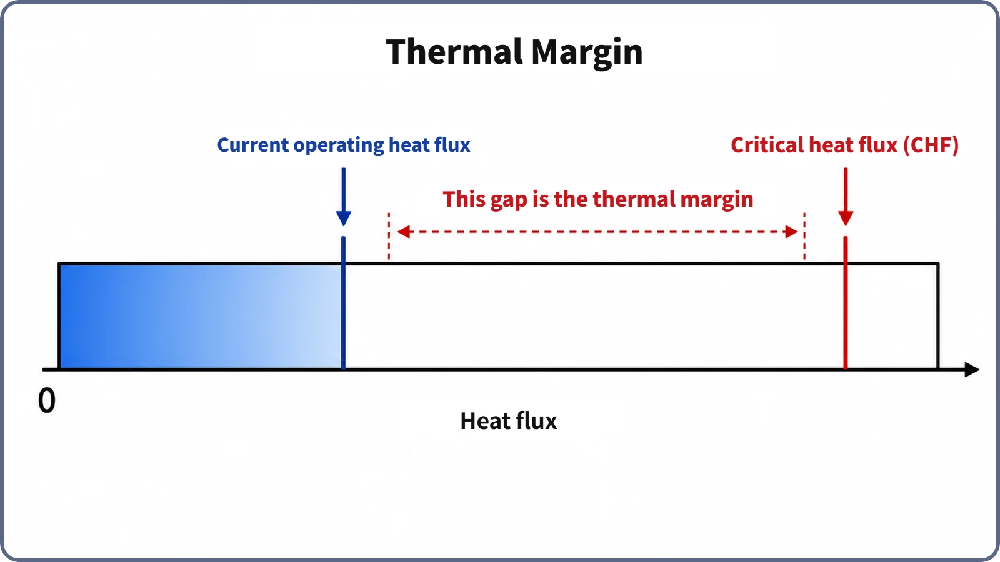

Heat Transfer & Thermal Hydraulics · 138
Good Drivers Don't Tailgate — Thermal Margin, a Reactor's Safety Gap
Reactors keep a deliberate gap between their operating heat flux and the critical heat flux, measured by DNBR and judged at the single most limiting spot.
Thermal margin is the gap between the heat flux a reactor actually operates at and the critical heat flux (CHF/DNB), the line where nucleate boiling gives way to film boiling. It is measured as DNBR, the predicted CHF divided by the actual heat flux at each spot, and judged at the single most limiting spot (MDNBR). Like a highway following distance, it covers correlation uncertainty, instrument error and transients.
A reactor's following distance
On the highway, one driver rides right on the bumper of the car ahead; another leaves enough room to react calmly if the car in front stops suddenly. Neither is crashing right now. But if the road turns slippery, the car ahead brakes hard, or attention drifts for a second, it's obvious which one is safer.
A reactor has its own version of that following distance. It's called thermal margin.
How close is the reactor "tailgating"?
Earlier we looked at nucleate boiling, where bubbles on the fuel surface actually help carry heat away, and at the limit of that help: beyond it, the surface is blanketed by vapor and heat transfer drops sharply (film boiling). The line between the two is the critical heat flux (CHF), which in reactors is often referred to as DNB (departure from nucleate boiling).
We won't re-explain that line here. Instead, a different question: how far from that line is the reactor actually running right now?
A normally operating reactor is designed and run so that nowhere in the core does the actual heat flux (the heat leaving the fuel surface into the coolant) press right up against the CHF at that spot. Like a driver who keeps a generous following distance, it always leaves a clear gap between actual operating conditions and the limit. That gap is the thermal margin.
The gap has a name and a number: DNBR
Thermal margin isn't a vague feeling; it's a value that is calculated and monitored. Its name is the departure from nucleate boiling ratio (DNBR).
DNBR (at a spot) = predicted critical heat flux at that spot ÷ actual heat flux at that spot
The further the value sits above 1, the further that spot is from the limit; the closer it gets to 1, the tighter it is following. A DNBR of 1 means the actual heat flux equals the predicted CHF, sitting exactly on the boundary.
A core has countless spots where this value is calculated, but safety analysis and monitoring don't focus on the average. They focus on the single spot where the value is smallest: the minimum DNBR (MDNBR). On the road, that's not your average distance to the car ahead but the distance at the most dangerously tight moment. However relaxed the rest of the core looks, if even one spot lacks margin, that spot sets the standard for the whole core.
Thermal margin on a single gauge

From the left end to the end of the filled part is the heat the core is actually removing now; the empty space from there to the limit marker is the thermal margin. In normal operation the plant is designed and operated so this empty space always stays clearly visible. When conditions shift in a direction that narrows it, such as power rising, flow dropping or coolant temperature climbing, think of the filled bar creeping toward the line.
Why leave a margin at all? Same reason you keep a following distance
If you know where the line is, why not run right up to it? Think about why you leave room on the highway.
First, road conditions change. Rain or slick pavement changes braking distance at the same speed. In a reactor, CHF is calculated with prediction formulas (correlations) fitted to experimental data, and there is always statistical uncertainty between those predictions and the real value.
Second, there are reaction times and instrument errors. A speedometer can be slightly off, and drivers need a moment to react. In a reactor, the instruments measuring power, flow and temperature each have an error band, and predicting how strongly power concentrates locally in the core (the power distribution) adds its own uncertainty.
Third, surprises happen. The car ahead might slam on its brakes. A reactor's power and heat flux can change momentarily while control rods move or during load following (raising and lowering output to match electricity demand).
With all these layers of uncertainty taken into account in advance, the actual operating point is designed to stay well inside the calculated limit (the point where DNBR equals 1). The specific minimum DNBR values used in real plants depend on the CHF correlation, licensing documents and era, so no number is given here. Like a careful driver, the reactor leaves room "just in case," not because of immediate danger.
Not to be confused with other "margins"
Shutdown margin deals with a completely different quantity. It asks whether there is enough negative reactivity (how surely the neutron population dies away) to stop the reactor. Thermal margin asks how safely heat can be removed while the reactor keeps running. One is about neutrons, the other about heat.
It also differs from CHF/DNB itself. CHF/DNB is the location of the limit; thermal margin (DNBR, MDNBR) is the distance from it right now. On the road, CHF/DNB is the rear bumper of the car ahead; thermal margin is the gap between your car and that bumper.
And it should be distinguished from safety margin, a broad term that applies across reactor safety design to many quantities: reactivity, heat, pressure, structural strength and more. Thermal margin is a specific sub-concept within it, limited to thermal hydraulics, especially avoiding DNB.
For reference, boiling water reactors (BWRs), where the coolant actually boils in the core to make steam, use a different indicator built on a similar idea instead of DNBR: the critical power ratio (CPR). Same idea, different calculation.
How the margin is kept
At the core design stage, decisions about fuel loading, control rod patterns and how evenly power spreads through the core are made with calculations ensuring that MDNBR never falls below the set minimum criterion anywhere in the core, under expected operating conditions and transients. During actual operation, power, flow and temperature are measured continuously to confirm that thermal margin stays sufficient, and if the margin is expected to approach its criterion, actions such as adjusting power are taken. The specific procedures and limit values depend on each plant's and regulator's technical specifications.
Two common misconceptions
"Any reduction in margin is immediately dangerous." No. Thermal margin is set conservatively with layers of uncertainty already built in, so even when it shrinks somewhat, the core usually remains a considerable distance from the limit. Falling below the set minimum criterion, however, is a separate matter: it means going outside an operating limit.
"Fuel fails the moment DNBR reaches 1." No. DNBR = 1 only means that spot's actual heat flux equals its predicted CHF, the boundary up to which nucleate boiling can be sustained. Actual design limits are set with more room than that, and, as noted before, crossing CHF/DNB does not by itself mean fuel failure.
The short version
- Thermal margin is the gap between a reactor's actual operating heat flux and the critical heat flux (CHF/DNB), the line where nucleate boiling gives way to film boiling.
- It is calculated as DNBR = predicted CHF ÷ actual heat flux, and the value at the single spot with the least margin in the core is the MDNBR.
- The margin exists to cover layers of uncertainty: CHF correlation uncertainty, instrument error and transients during operation, the same logic as a highway following distance.
- It is a thermal-hydraulic margin, distinct from shutdown margin (reactivity), from CHF/DNB itself (the location of the line) and from safety margin (the broad umbrella term).
- It is built in at the design stage and monitored continuously during operation.